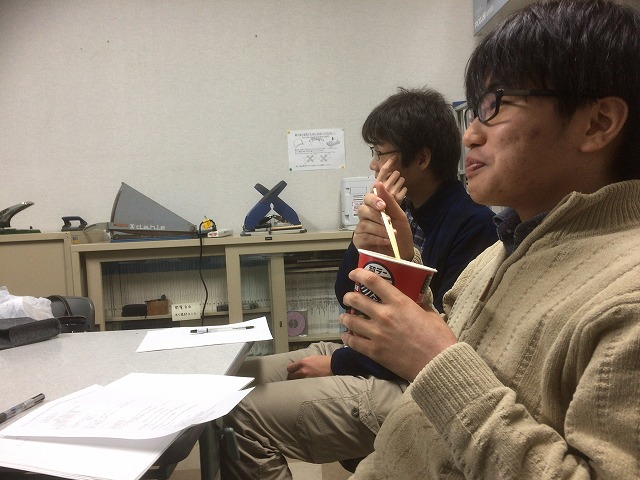

| ・ GPU講座 (H30.12.21) | |||
B4のM四さんによるGPU講座。ホログラフィの再生処理が100倍以上速くなる！ということで、関係する人を集めて開講です。画像処理も3次元空間がメインになってきて、 いまは計算時間がボトルネックになっていますが、GPUは問題解決のカギになっていきます。あとはHDDの容量が圧迫されるので、むやみに計算するのではなく、どんな結果が必要 なのか逆算していく必要があります。力 is powerな感じで、大容量HDD使うのもありですが。 |
|||
|
イラスト屋が活躍 |

ご飯食べてる人も | ||
|
自由な感じで受講 |
普通のプログラムの感じではないですね | ||
|
今後ホログラフィのテーマは必須ですね |
PIVも作りたい | ||